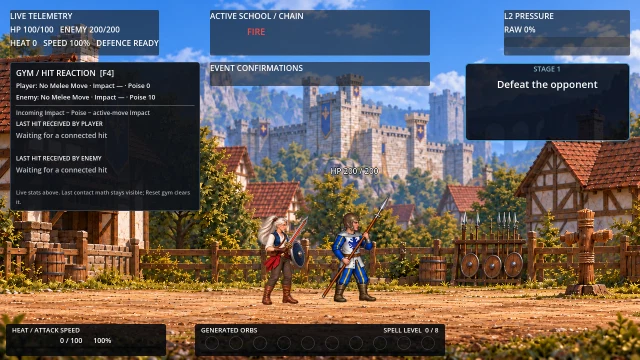

Current game versus AI studies
The previous screen showed three R&D outputs. It did not include the existing game animation. The current game is now the left column.
Left: current game X1 · Middle: first AI X1 study · Right: refined AI X1 study
Loading existing-game and trial sprite atlases…
Native 1× size and the saved frame exposure of each clip. X1: .720s at Heat 0 / .480s at fixed Heat 100. Cast: 1.200s / .800s. A 200ms review pause follows each action.
Where these animations came from
- Current game: artwork already bound in this local checkout. Exact source PNG bytes, frame keys and action timing; a browser reconstruction, not a gameplay recording or a published-build capture.
- First AI X1 study: ten drawings generated during this R&D. This was previously labeled “before”; it was never the existing game baseline.
- Refined AI X1 study: those same ten drawings plus six new AI inbetweens. No entirely new replacement strip was generated.
- New AI Cast study: a second action made with the same reference and workflow, with explicitly recorded guard and peak-pose reuse.
- The existing X1 and selected A use different swing paths. This compares the practical result against the game; the first/refined AI pair isolates the refinement more closely. Gameplay and hit queries are unchanged.
Actual Godot game test of the new artwork
X1 hit → orb generated → Charging → Cast launched and hit → Dodge. This is an isolated game copy with scheduled action inputs. Human motion and gameplay review remain open.

Full-resolution X1 frame · Cast launch frame · Game-test evidence · Current-game baseline provenance
Results and correction effort · Isolated Godot game project · Earlier AI/rig/hybrid method comparison